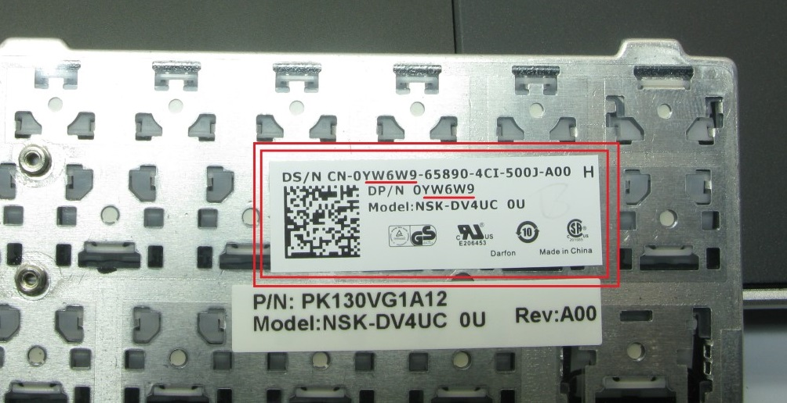
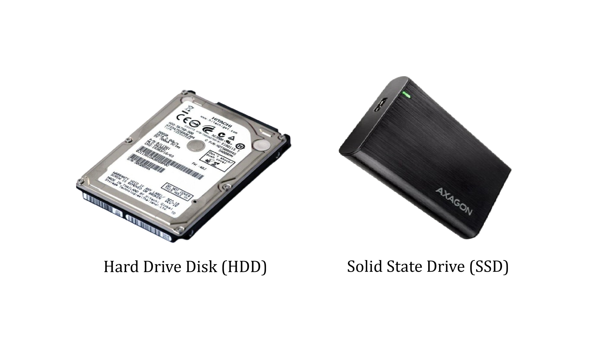
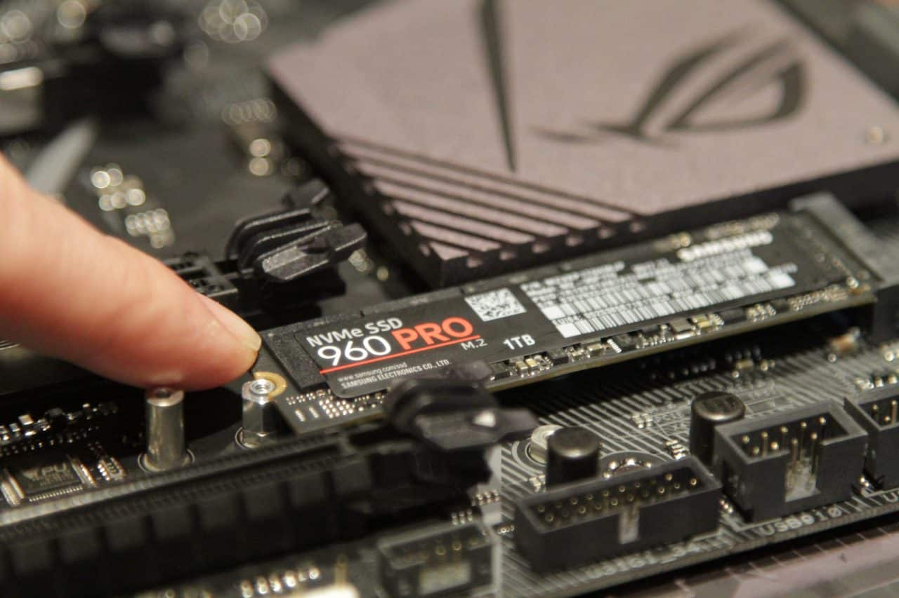

Computer Parts Explained: Part Numbers, Drives, and Connectors
Whether you are upgrading a laptop, building a desktop, or simply trying to order the right replacement part, a little terminology goes a long way. In this article we cover four of the most common questions our customers ask: what a part number is and where to find it, what sets SATA apart from SAS, when to choose an SSD over an HDD, and which SSD format actually fits your machine.
What Is a Part Number, and Where Do I Find It?
A part number — sometimes abbreviated P/N — is a unique identifier assigned by the manufacturer to a specific component. Think of it as a product's fingerprint: two parts that look nearly identical on the outside can have completely different part numbers because one supports a higher voltage, fits a slightly different chassis, or uses a different connector pinout.
You will find the part number printed on the label affixed to the component itself — usually on the back or underside of a hard drive, RAM stick, or battery. On plastic parts (keyboard frames, hinges, bezels), the number is often moulded directly into the plastic rather than printed on a sticker, so look for small raised or recessed digits inside the casing.
If the sticker is worn or the moulded text is hard to read, you can also look up the part number through your device's service manual, which most major manufacturers (Dell, HP, Lenovo) publish for free on their support websites. A serial number lookup on the manufacturer's site will often return a full parts list as well.

The part number is printed on the label or moulded into the plastic — always check before ordering.
What Is the Difference Between SATA and SAS?
SATA (Serial ATA) and SAS (Serial Attached SCSI) are two different interface standards for connecting storage drives to a computer. At a glance they can look similar — both use small data and power connectors — but they are designed for very different environments.
SATA is the standard you will find in virtually every consumer laptop and desktop. It is affordable, widely supported, and more than fast enough for everyday tasks. SATA drives — both HDDs and SSDs — top out at around 600 MB/s and are rated for normal office or home use.
SAS is built for servers and enterprise storage systems. SAS drives spin faster, support much longer duty cycles (they are designed to run 24/7 under heavy load), and offer better error recovery. They also carry a higher price tag. Importantly, SAS controllers can read SATA drives, but a SATA controller cannot read SAS drives — compatibility goes one way.
| SATA | SAS | |
|---|---|---|
| Typical use | Consumer PCs, laptops | Servers, enterprise storage |
| Max speed | ~600 MB/s | Up to 1,200 MB/s (SAS-3) |
| Duty cycle | 8–12 hrs/day typical | 24/7 continuous |
| Price | Affordable | Significantly higher |
| Cross-compatibility | Does not support SAS drives | Can read SATA drives |
What Is the Difference Between an SSD and an HDD?
An HDD (Hard Disk Drive) stores data on spinning magnetic platters. It is slower but offers a lot of storage for a low price, which makes it ideal for bulk storage and backups. An SSD (Solid State Drive) has no moving parts — it stores data on flash memory chips, which means it reads and writes data several times faster than any HDD.

In practical terms: if you install Windows on an SSD, your computer will boot in around ten seconds. On an HDD, that same boot can take a minute or more. Applications open faster, files copy faster, and the whole system feels more responsive.
The best approach for most users is to combine both: use an SSD as your system drive (where Windows and your applications live) and an HDD as a secondary drive for photos, videos, and backups. You get speed where it matters and cheap capacity where you just need space.
SSD Formats: 2.5" SATA, M.2 SATA, and M.2 NVMe — What Is the Difference?
Once you have decided to buy an SSD, you face a second choice: which physical format does your machine actually support? There are three common ones, and they are not interchangeable.
2.5" SATA SSD
This is the classic laptop-sized SSD. It is the same size and shape as a 2.5-inch laptop hard drive, which means it slots straight into any bay designed for one. It connects via the standard SATA cable and is limited to SATA speeds (~550 MB/s sequential read). If you are upgrading an older laptop or desktop that has a 2.5-inch drive bay and no M.2 slot, this is your option.
M.2 SATA SSD
The M.2 form factor is a small stick-shaped module that plugs directly into an M.2 slot on the motherboard — no cable needed. An M.2 SATA drive uses the same SATA protocol as a 2.5-inch drive, so the speed ceiling is identical (~550 MB/s). The advantage is purely physical: it takes up much less space and keeps the inside of the machine tidier. Many budget and mid-range laptops from 2016 onwards include an M.2 slot but only support SATA over it.
M.2 NVMe SSD
NVMe (Non-Volatile Memory Express) is a protocol designed specifically for flash storage. An M.2 NVMe drive uses the same slot as an M.2 SATA drive, but instead of going through the SATA controller it communicates directly with the CPU via PCIe lanes. The result is dramatically faster transfer speeds — typically 3,000 to 7,000 MB/s on a modern drive, compared to 550 MB/s for SATA. If you are buying a new laptop or building a new desktop today, NVMe is the standard you want.
| 2.5" SATA | M.2 SATA | M.2 NVMe | |
|---|---|---|---|
| Connector | SATA cable + power | M.2 slot (SATA key) | M.2 slot (PCIe key) |
| Typical read speed | ~550 MB/s | ~550 MB/s | 3,000–7,000 MB/s |
| Size | Large (2.5 inch) | Compact stick | Compact stick |
| Best for | Older laptops & desktops | Mid-range laptops (2016–2020) | Modern laptops & desktops |
| Price | Low | Low | Moderate |

An M.2 NVMe drive plugs directly into the motherboard — no cables, no bay required.
Choosing the Right Part: A Quick Checklist
Before you order any component, run through these three questions: Does the part number match your specific device model? Does the connector format (SATA cable, M.2 slot) match what is physically available on your motherboard? And does the protocol (SATA, SAS, NVMe) match what your controller supports?
Getting one of these wrong means the part either will not fit, will not be detected, or will run at a fraction of its rated speed. A two-minute check against your device's service manual or the manufacturer's compatibility page can save you a frustrating return.
If you are unsure, our support team is happy to help you identify the right part for your machine — just send us the model number or service tag and we will point you in the right direction. All the parts we sell are tested, labelled with accurate specifications, and ship the same day.